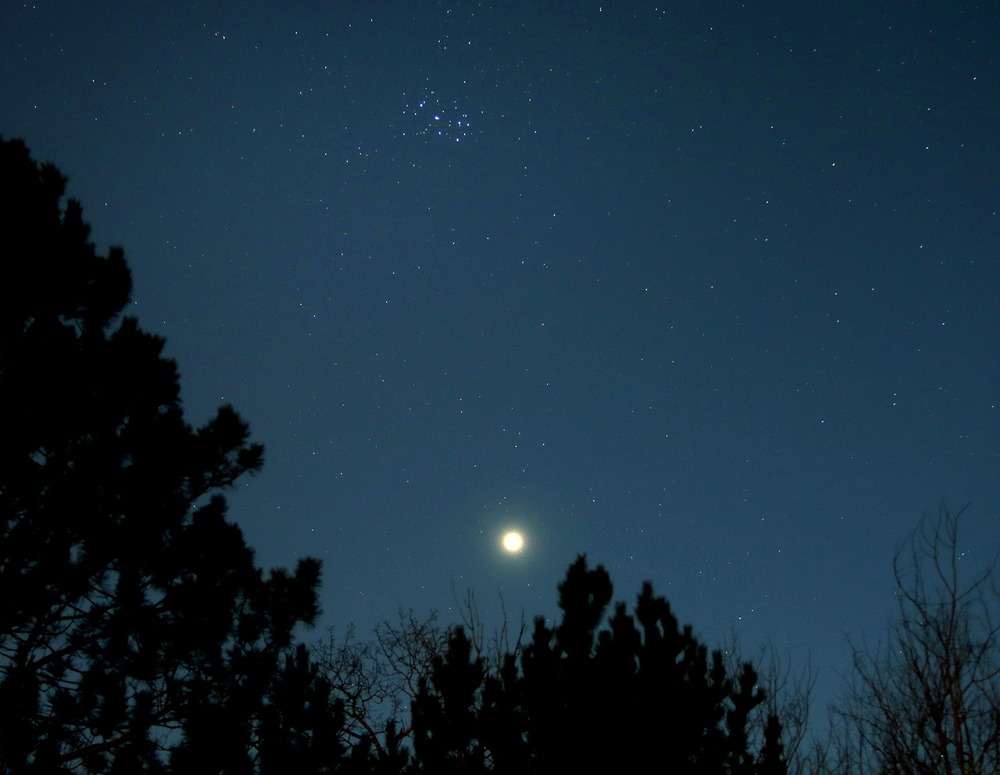

I heard once that if you were conscripted to be a soldier in Ancient
Greece,
they would ask you to count the stars you could see in the
Pleiades.
Most would say 6 or 7, but if you counted 8, you were
chosen to be a scout.
Another story is that Orion chased after the
seven beautiful sisters for hundreds of years
until Zeus took pity
on them and turned them into stars. Of course, Orion was turned into
stars too and continues to chase them across the sky.
Here they are (bright cluster near the top) above venus (bright and big):
